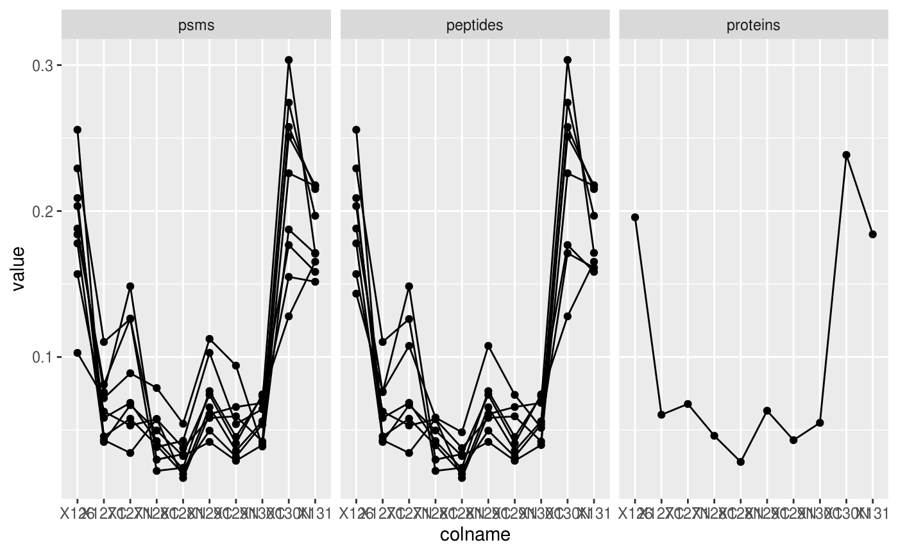
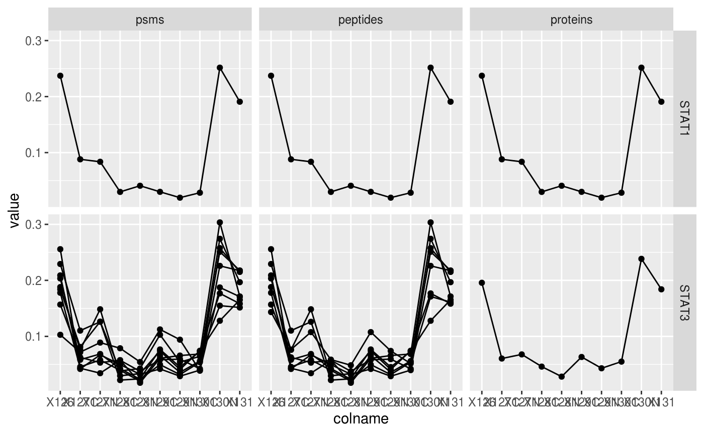

Quantitative features for mass spectrometry data
Laurent Gatto
Source:vignettes/Features.Rmd
Features.RmdAbstract
This vignette describes the functionality implemented in the Features package. Features provides infrastructure to manage and process quantitative features for high-throughput mass spectrometry assays, including proteomics and metabolomics.Introduction
The Features package provides infrastructure (that is classes and the methods to process and manipulate them) to manage and analyse quantitative features from mass spectrometry experiments. It is based on the MultiAssayExperiment class from the MultiAssayExperiment (Ramos et al. 2017). that stores a set of assays. Assays in a Features object have a specific relation, that is depicted in figure @ref(fig:featuresplot): assays in a Features object are the result of the aggregation of quantitative features of other assays. In the case of a quantitative proteomics experiment, these different assays would be PSMs, that are aggregated into peptides, that are themselves aggregated into proteins.
Conceptual representation of a Features object and the aggregative relation between different assays.
In the following sections, we are going to demonstrate how to create a single-assay Features objects starting from a spreadsheet, how to compute the next assays (peptides and proteins), and how these can be manipulated and explored.
Creating Features object
While Features objects can be created manually (see ?Features for details), most users will probably possess quantitative data in a spreadsheet or a dataframe. In such cases, the easiest is to use the readFeatures function to extract the quantitative data and metadata columns. Below, we load the hlpsms dataframe that contains data for 28 PSMs from the TMT-10plex hyperLOPIT spatial proteomics experiment from (Christoforou et al. 2016). The ecol argument specifies that columns 1 to 10 contain quantitation data, and that the assay should be named psms in the returned Features object, to reflect the nature of the data.
## A instance of class Features containing
## [1] psms: SummarizedExperiment with 32776 rows and 10 columnsBelow, we see that we can extract an assay using its index or its name. The individual assays are stored as SummerizedExperiment object and further access its quantitative data and metadata using the assay and rowData functions
## class: SummarizedExperiment
## dim: 32776 10
## metadata(0):
## assays(1): ''
## rownames(32776): 1 2 ... 32775 32776
## rowData names(18): Sequence ProteinDescriptions ... RTmin markers
## colnames(10): X126 X127C ... X130N X131
## colData names(0):## class: SummarizedExperiment
## dim: 32776 10
## metadata(0):
## assays(1): ''
## rownames(32776): 1 2 ... 32775 32776
## rowData names(18): Sequence ProteinDescriptions ... RTmin markers
## colnames(10): X126 X127C ... X130N X131
## colData names(0):## X126 X127C X127N X128C X128N X129C
## 1 0.01279427 0.024462641 0.01044012 0.083418628 0.018577277 0.23234391
## 2 0.01524632 0.089010311 0.08151934 0.105754825 0.054639993 0.17449546
## 3 0.13087550 0.023223985 0.01372910 0.010906291 0.010777982 0.10478594
## 4 0.04637540 0.023187698 0.09812058 0.058579448 0.052233341 0.13229192
## 5 0.07011643 0.004831193 0.00321367 0.006790748 0.004389403 0.10047172
## 6 0.05415942 0.127071073 0.05786052 0.366408823 0.113253636 0.04071209
## X129N X130C X130N X131
## 1 0.29836233 0.02942682 0.16427840 0.12589560
## 2 0.22516965 0.01533445 0.12293998 0.11588966
## 3 0.02951114 0.38663872 0.16038664 0.12916471
## 4 0.15377105 0.09665609 0.17134489 0.16743959
## 5 0.04204136 0.33276803 0.22445809 0.21091935
## 6 0.12275312 0.01020270 0.06057466 0.04700396## DataFrame with 6 rows and 18 columns
## Sequence ProteinDescriptions NbProteins ProteinGroupAccessions
## <character> <character> <integer> <character>
## 1 aAAGEAk Ribosome-b... 1 Q99PL5
## 2 VTEEAk Heme oxyge... 1 P14901
## 3 aSGDPGk Transcript... 2 O89090
## 4 sAAAEAk Isoform 3 ... 3 O89032-3
## 5 aANAEGk Deoxynucle... 1 Q8R2M2
## 6 aAAEEAR Coiled-coi... 1 Q9JIG7
## Modifications qValue PEP IonScore NbMissedCleavages
## <character> <numeric> <numeric> <integer> <integer>
## 1 N-Term(Car... 0.001 0.0162 46 0
## 2 K6(TMT6ple... 0.002 0.0393 46 0
## 3 N-Term(Car... 0.008 0.1170 18 0
## 4 N-Term(Car... 0.001 0.0194 28 0
## 5 N-Term(Car... 0.002 0.0387 28 0
## 6 N-Term(TMT... 0.002 0.0386 36 0
## IsolationInterference IonInjectTimems Intensity Charge mzDa MHDa
## <integer> <integer> <numeric> <integer> <numeric> <numeric>
## 1 0 70 192000 2 452.258 903.510
## 2 0 70 416000 2 453.261 905.515
## 3 0 70 351000 2 459.249 917.491
## 4 0 70 62100 2 467.263 933.520
## 5 0 70 246000 2 473.761 946.515
## 6 0 70 172000 2 473.762 946.516
## DeltaMassPPM RTmin markers
## <numeric> <numeric> <character>
## 1 -0.14 10.45 Endoplasmi...
## 2 0.93 15.96 unknown
## 3 1.98 11.42 unknown
## 4 -0.73 13.32 unknown
## 5 -1.05 10.25 Nucleus - ...
## 6 0.88 14.79 unknownFor further details on how to manipulate such objects, refer to the MultiAssayExperiment (Ramos et al. 2017) and SummerizedExperiment (Morgan et al. 2019) packages.
As illustrated in figure @ref(fig:featuresplot), an central characteristic of Features objects is the aggregative relation between their assays. This can be obtained with the aggregateFeatures function that will aggregate quantitative features from one assay into a new one. In the next code chunk, we aggregate PSM-level data into peptide by grouping all PSMs that were matched the same peptide sequence. Below, the aggregation function is set, as an example, to the mean. The new assay is named peptides.
## A instance of class Features containing
## [1] psms: SummarizedExperiment with 32776 rows and 10 columns
## [2] peptides: SummarizedExperiment with 26796 rows and 10 columns## class: SummarizedExperiment
## dim: 26796 10
## metadata(0):
## assays(1): ''
## rownames(26796): aAAAAAAAAAAAAAAGAAGk AAAAAAAAAAAAAAAGAAGk ...
## yYVQPQWVFDcVNAR yYVTIIDAPGHR
## rowData names(7): Sequence ProteinDescriptions ... markers .n
## colnames(10): X126 X127C ... X130N X131
## colData names(0):Below, we repeat the aggregation operation by grouping peptides into proteins as defined by the ProteinGroupAccessions variable.
hl <- aggregateFeatures(hl, "peptides", "ProteinGroupAccessions", name = "proteins", fun = colMeans)
hl## A instance of class Features containing
## [1] psms: SummarizedExperiment with 32776 rows and 10 columns
## [2] peptides: SummarizedExperiment with 26796 rows and 10 columns
## [3] proteins: SummarizedExperiment with 4276 rows and 10 columns## class: SummarizedExperiment
## dim: 4276 10
## metadata(0):
## assays(1): ''
## rownames(4276): A2A432 A2A4P0 ... Q9Z315 Q9Z321
## rowData names(3): ProteinGroupAccessions markers .n
## colnames(10): X126 X127C ... X130N X131
## colData names(0):The sample assayed in a Features object can be documented in the colData slot. The hl data doens’t currently possess any sample metadata. These can be addedd as a new DataFrame with matching names (i.e. the DataFrame rownames must be identical assay’s colnames) or can be added one variable at at time, as shown below.
## DataFrame with 10 rows and 0 columnshl$tag <- c("126", "127N", "127C", "128N", "128C", "129N", "129C",
"130N", "130C", "131")
colData(hl)## DataFrame with 10 rows and 1 column
## tag
## <character>
## X126 126
## X127C 127N
## X127N 127C
## X128C 128N
## X128N 128C
## X129C 129N
## X129N 129C
## X130C 130N
## X130N 130C
## X131 131Subsetting
One particularity of the Features infrastructure is that the features of the constitutive assays are linked through an aggregative relation. This relation is recorded when creating new assays with aggregateFeatures and is exploited when subsetting Feature by their feature names.
In the example below, we are interested in the Stat3B isoform of the Signal transducer and activator of transcription 3 (STAT3) with accession number P42227-2. This accession number corresponds to a feature name in the proteins assay. But this protein row was computed from 8 peptide rows in the peptides assay, themselves resulting from the aggregation of 8 rows in the psms assay.
## A instance of class Features containing
## [1] proteins: SummarizedExperiment with 1 rows and 10 columns
## [2] peptides: SummarizedExperiment with 8 rows and 10 columns
## [3] psms: SummarizedExperiment with 9 rows and 10 columnsWe can easily visualise this new Features object using ggplot2 once converted into a data.frame.
stat3_df <- data.frame(longFormat(stat3))
stat3_df$assay <- factor(stat3_df$assay,
levels = c("psms", "peptides", "proteins"))
library("ggplot2")
ggplot(data = stat3_df,
aes(x = colname,
y = value,
group = rowname)) +
geom_line() + geom_point() +
facet_grid(~ assay)
Below we repeat the same operation for the Signal transducer and activator of transcription 1 (STAT1) and 3 (STAT3) accession numbers, namely P42227-2 and P42225. We obtain a new Features instance containing 2 proteins, 9 peptides and 10 PSMS. From this, we can readily conclude that STAT1 was identified by a single PSM/peptide.
## A instance of class Features containing
## [1] proteins: SummarizedExperiment with 2 rows and 10 columns
## [2] peptides: SummarizedExperiment with 9 rows and 10 columns
## [3] psms: SummarizedExperiment with 10 rows and 10 columnsBelow, we visualise the expression profiles for the two proteins.
stat_df <- data.frame(longFormat(stat))
stat_df$stat3 <- ifelse(stat_df$rowname %in% stat3_df$rowname,
"STAT3", "STAT1")
stat_df$assay <- factor(stat_df$assay,
levels = c("psms", "peptides", "proteins"))
ggplot(data = stat_df,
aes(x = colname,
y = value,
group = rowname)) +
geom_line() + geom_point() +
facet_grid(stat3 ~ assay)
The subsetting by feature names is also available as a call to the subsetByFeature function, for use with the pipe operator.
## A instance of class Features containing
## [1] proteins: SummarizedExperiment with 1 rows and 10 columns
## [2] peptides: SummarizedExperiment with 8 rows and 10 columns
## [3] psms: SummarizedExperiment with 9 rows and 10 columns## A instance of class Features containing
## [1] proteins: SummarizedExperiment with 2 rows and 10 columns
## [2] peptides: SummarizedExperiment with 9 rows and 10 columns
## [3] psms: SummarizedExperiment with 10 rows and 10 columnsand possibly
hl %>%
subsetByFeature("P42227-2") %>%
longFormat() %>%
as.data.frame %>%
ggplot(aes(x = colname,
y = value,
group = rowname)) +
geom_line() +
facet_grid(~ assay)to reproduce the line plot.
Finally, a simply shiny app allows to explore and visualise the respective assays of a Features object.

Features interactive interface: heatmap of the peptide assay data.

Features interactive interface: quantitative peptide assay data.

Features interactive interface: peptide assay row data
A dropdown menu in the side bar allows the user to select an assay of interest, which can then be visualised as a heatmap (figure @ref(fig:heatmapdisplay)), as a quantitative table (figure @ref(fig:assaydisplay)) or a row data table (figure @ref(fig:rowdatadisplay)).
Filtering
Features is assays can also be filtered based on variables in their respective row data slots using the filterFeatures function. The filters can be defined using the formula interface or using AnnotationFilter objects from the AnnotationFilter package (Morgan and Rainer 2019). In addition to the pre-defined filters (such as SymbolFilter, ProteinIdFilter, … that filter on gene symbol, protein identifier, …), this package allows users to define arbitrary character or numeric filters using the VariableFilter.
mito_filter <- VariableFilter(field = "markers",
value = "Mitochondrion",
condition = "==")
mito_filter## class: CharacterVariableFilter
## condition: ==
## value: Mitochondrion## class: NumericVariableFilter
## condition: <=
## value: 0.001These filter can then readily be applied to all assays’ row data slots. The mito_filter will return all PSMs, peptides and proteins that were annotated as localising to the mitochondrion.
## A instance of class Features containing
## [1] psms: SummarizedExperiment with 2019 rows and 10 columns
## [2] peptides: SummarizedExperiment with 1770 rows and 10 columns
## [3] proteins: SummarizedExperiment with 360 rows and 10 columnsThe qval_filter, on the other hand, will only return a subset of PSMs, because the qValue variable is only present in the psms assays. The q-values are only relevant to PSMs and that variable was dropped from the other assays.
## harmonizing input:
## removing 20 sampleMap rows not in names(experiments)## A instance of class Features containing
## [1] psms: SummarizedExperiment with 26768 rows and 10 columnsThe same filters can be created using the forumla interface:
## A instance of class Features containing
## [1] psms: SummarizedExperiment with 2019 rows and 10 columns
## [2] peptides: SummarizedExperiment with 1770 rows and 10 columns
## [3] proteins: SummarizedExperiment with 360 rows and 10 columns## harmonizing input:
## removing 20 sampleMap rows not in names(experiments)## A instance of class Features containing
## [1] psms: SummarizedExperiment with 26768 rows and 10 columnsSession information
## R Under development (unstable) (2019-12-29 r77627)
## Platform: x86_64-pc-linux-gnu (64-bit)
## Running under: Ubuntu 14.04.5 LTS
##
## Matrix products: default
## BLAS: /home/travis/R-bin/lib/R/lib/libRblas.so
## LAPACK: /home/travis/R-bin/lib/R/lib/libRlapack.so
##
## locale:
## [1] LC_CTYPE=en_US.UTF-8 LC_NUMERIC=C
## [3] LC_TIME=en_US.UTF-8 LC_COLLATE=en_US.UTF-8
## [5] LC_MONETARY=en_US.UTF-8 LC_MESSAGES=en_US.UTF-8
## [7] LC_PAPER=en_US.UTF-8 LC_NAME=C
## [9] LC_ADDRESS=C LC_TELEPHONE=C
## [11] LC_MEASUREMENT=en_US.UTF-8 LC_IDENTIFICATION=C
##
## attached base packages:
## [1] parallel stats4 stats graphics grDevices utils datasets
## [8] methods base
##
## other attached packages:
## [1] magrittr_1.5 ggplot2_3.2.1
## [3] Features_0.3.1 MultiAssayExperiment_1.13.4
## [5] SummarizedExperiment_1.17.1 DelayedArray_0.13.1
## [7] BiocParallel_1.21.2 matrixStats_0.55.0
## [9] Biobase_2.47.2 GenomicRanges_1.39.1
## [11] GenomeInfoDb_1.23.1 IRanges_2.21.2
## [13] S4Vectors_0.25.8 BiocGenerics_0.33.0
## [15] BiocStyle_2.15.3
##
## loaded via a namespace (and not attached):
## [1] Rcpp_1.0.3 lattice_0.20-38 assertthat_0.2.1
## [4] rprojroot_1.3-2 digest_0.6.23 R6_2.4.1
## [7] plyr_1.8.5 backports_1.1.5 evaluate_0.14
## [10] highr_0.8 pillar_1.4.3 zlibbioc_1.33.0
## [13] rlang_0.4.2 lazyeval_0.2.2 Matrix_1.2-18
## [16] rmarkdown_2.0 pkgdown_1.4.1 desc_1.2.0
## [19] labeling_0.3 stringr_1.4.0 ProtGenerics_1.19.3
## [22] RCurl_1.95-4.12 munsell_0.5.0 compiler_4.0.0
## [25] xfun_0.11 pkgconfig_2.0.3 htmltools_0.4.0
## [28] tidyselect_0.2.5 tibble_2.1.3 GenomeInfoDbData_1.2.2
## [31] bookdown_0.16 crayon_1.3.4 dplyr_0.8.3
## [34] withr_2.1.2 MASS_7.3-51.5 bitops_1.0-6
## [37] grid_4.0.0 gtable_0.3.0 lifecycle_0.1.0
## [40] AnnotationFilter_1.11.0 MsCoreUtils_0.0.4 scales_1.1.0
## [43] stringi_1.4.3 farver_2.0.1 XVector_0.27.0
## [46] reshape2_1.4.3 fs_1.3.1 tools_4.0.0
## [49] glue_1.3.1 purrr_0.3.3 yaml_2.2.0
## [52] colorspace_1.4-1 BiocManager_1.30.10 memoise_1.1.0
## [55] knitr_1.26References
Christoforou, Andy, Claire M Mulvey, Lisa M Breckels, Aikaterini Geladaki, Tracey Hurrell, Penelope C Hayward, Thomas Naake, et al. 2016. “A Draft Map of the Mouse Pluripotent Stem Cell Spatial Proteome.” Nat Commun 7: 8992. https://doi.org/10.1038/ncomms9992.
Morgan, Martin, Valerie Obenchain, Jim Hester, and Hervé Pagès. 2019. SummarizedExperiment: SummarizedExperiment Container.
Morgan, Martin, and Johannes Rainer. 2019. AnnotationFilter: Facilities for Filtering Bioconductor Annotation Resources. https://github.com/Bioconductor/AnnotationFilter.
Ramos, Marcel, Lucas Schiffer, Angela Re, Rimsha Azhar, Azfar Basunia, Carmen Rodriguez Cabrera, Tiffany Chan, et al. 2017. “Software for the Integration of Multi-Omics Experiments in Bioconductor.” Cancer Research 77(21); e39-42.